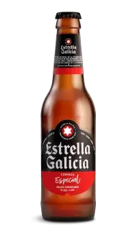
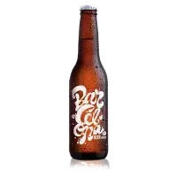
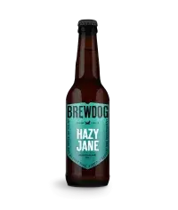
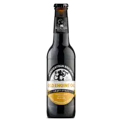
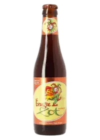

Estrella Galicia - Cerveza refrescante y de gran tradición.

Barcelona Beer Company - Innovación cervecera desde Barcelona.

BrewDog - Cervezas artesanales de Escocia.

Harviestoun - Tradición y calidad en cada trago.
Gulden Draak - Cerveza belga de gran cuerpo y sabor.

Brugse Zot - Cervecería de Brujas, un clásico belga.